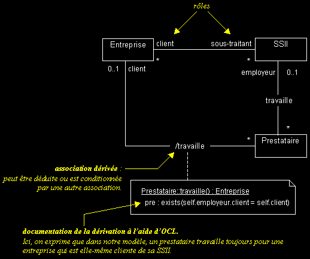
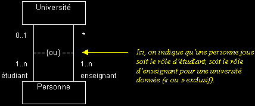
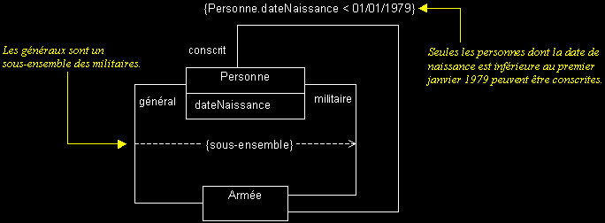
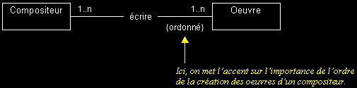
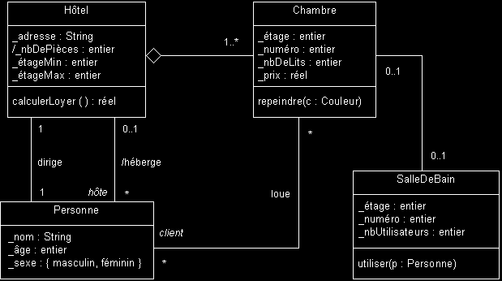
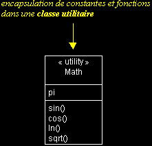
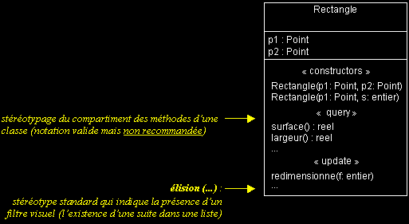

|
|
|
Les vues statiques d'UML (suite...)
DIAGRAMME DE CLASSES (suite...)
q
Association dérivée
- Les associations dérivées sont des associations redondantes, qu'on peut déduire d'une autre association ou d'un ensemble d'autres associations.
- Elles permettent d'indiquer des chemins de navigation "calculés", sur un diagramme de classes.
- Elles servent beaucoup à la compréhension de la navigation (comment joindre telles instances d'une classe à partir d'une autre).

q Contrainte sur une association
- Les contraintes sont des expressions qui précisent le rôle ou la portée d'un élément de modélisation (elles permettent d'étendre ou préciser sa sémantique).
- Sur une association, elles peuvent par exemple restreindre le nombre d'instances visées (ce sont alors des "expressions de navigation").
- Les contraintes peuvent s'exprimer en langage naturel. Graphiquement, il s'agit d'un texte encadré d'accolades.



q OCL
- UML formalise l'expression des contraintes avec OCL (Object Constraint Language).
- OCL est une contribution d'IBM à UML 1.1.
- Ce langage formel est volontairement simple d'accès et possède une grammaire élémentaire (OCL peut être interprété par des outils).
- Il représente un juste milieu, entre langage naturel et langage mathématique. OCL permet ainsi de limiter les ambiguïtés, tout en restant accessible.
- OCL permet de décrire des invariants dans un modèle, sous forme de pseudo-code :
- pré et post-conditions pour une opération,
- expressions de navigation,
- expressions booléennes, etc...
- OCL est largement utilisé dans la définition du métamodèle UML.
Nous allons nous baser sur une étude de cas, pour introduire brièvement OCL.
Monsieur Formulain, directeur d'une chaîne d'hôtels, vous demande de concevoir une application de gestion pour ses hôtels. Voici ce que vous devez modéliser :
Un hôtel Formulain est constitué d'un certain nombre de chambres. Un responsable de l'hôtel gère la location des chambres. Chaque chambre se loue à un prix donné (suivant ses prestations).
L'accès aux salles de bain est compris dans le prix de la location d'une chambre. Certaines chambres comportent une salle de bain, mais pas toutes. Les hôtes de chambres sans salle de bain peuvent utiliser une salle de bain sur le palier. Ces dernières peuvent être utilisées par plusieurs hôtes.
Les pièces de l'hôtel qui ne sont ni des chambres, ni des salles de bain (hall d'accueil, cuisine...) ne font pas partie de l'étude (hors sujet).
Des personnes peuvent louer une ou plusieurs chambres de l'hôtel, afin d'y résider. En d'autre termes : l'hôtel héberge un certain nombre de personnes, ses hôtes (il s'agit des personnes qui louent au moins une chambre de l'hôtel...).
Le diagramme UML ci-dessous présente les classes qui interviennent dans la modélisation d'un hôtel Formulain, ainsi que les relations entre ces classes.
Attention : le modèle a été réduit à une vue purement statique. La dynamique de l'interaction entre instances n'est pas donnée ici, pour simplifier l'exemple. Lors d'une modélisation complète, les vues dynamiques complémentaires ne devraient pas être omises (tout comme la conceptualisation préalable par des use cases)...
Remarque : cet exemple est inspiré d'un article paru dans JOOP (Journal of Object Oriented Programming), en mai 99.

OCL permet d'enrichir ce diagramme, en décrivant toutes les contraintes et tous les invariants du modèle présenté, de manière normalisée et explicite (à l'intérieur d'une note rattachée à un élément de modélisation du diagramme).
Voici quelques exemples de contraintes qu'on pourrait définir sur ce diagramme, avec la syntaxe OCL correspondante.
Attention !
Les exemples de syntaxe OCL ci-dessous ne sont pas détaillés, référez-vous au document de la norme UML adéquat ("OCL spécification"). Il ne s'agit là que d'un très rapide aperçu du pouvoir d'abstraction d'OCL...
Un hôtel Formulain ne contient jamais d'étage numéro 13 (superstition oblige).
context Chambre inv:
self._étage <> 13
context SalleDeBain inv:
self._étage <> 13
Le nombre de personnes par chambre doit être inférieur ou égal au nombre de lits dans la chambre louée. Les enfants (accompagnés) de moins de 4 ans ne "comptent pas" dans cette règle de calcul (à hauteur d'un enfant de moins de 4 ans maximum par chambre).
context Chambre inv:
client->size <= _nbDeLits or
(client->size = _nbDeLits + 1 and
client->exists(p : Personne | p._âge < 4))
L'étage de chaque chambre est compris entre le premier et le dernier étage de l'hôtel.
context Hôtel inv:
self.chambre->forAll(c : Chambre | c._étage <= self._étageMax and
c._étage >= self._étageMin)
Chaque étage possède au moins une chambre (sauf l'étage 13, qui n'existe pas...).
context Hôtel inv:
Sequence{_étageMin.._étageMax}->forAll(i : Integer |
if i <> 13 then
self.chambre->select(c : Chambre | c._étage = i)->notEmpty)
endif)
On ne peut repeindre une chambre que si elle n'est pas louée. Une fois repeinte, une chambre coûte 10% de plus.
context Chambre::repeindre(c : Couleur)
pre: client->isEmpty
post: _prix = _prix@pre * 1.1
Une salle de bain privative ne peut être utilisée que par les personnes qui louent la chambre contenant la salle de bain et une salle de bain sur le palier ne peut être utilisée que par les clients qui logent sur le même palier.
context SalleDeBain::utiliser(p : Personne)
pre: if chambre->notEmpty then
chambre.client->includes(p)
else
p.chambre._étage = self._étage
endif
post: _nbUtilisateurs = _nbUtilisateurs@pre + 1
Le loyer de l'hôtel est égal à la somme du prix de toutes les chambres louées.
context Hôtel::calculerLoyer() : réel
pre:
post: result = self.chambre->select(client->notEmpty)._prix->sum
q Stéréotypes
- Les stéréotypes permettent d'étendre la sémantique des éléments de modélisation : il s'agit d'un mécanisme d'extensibilité du métamodèle d'UML.
- Les stéréotypes permettent de définir de nouvelles classes d'éléments de modélisation, en plus du noyau prédéfini par UML.
- Utilisez les stéréotypes avec modération et de manière concertée (notez aussi qu'UML propose de nombreux stéréotypes standards).


|
|
|